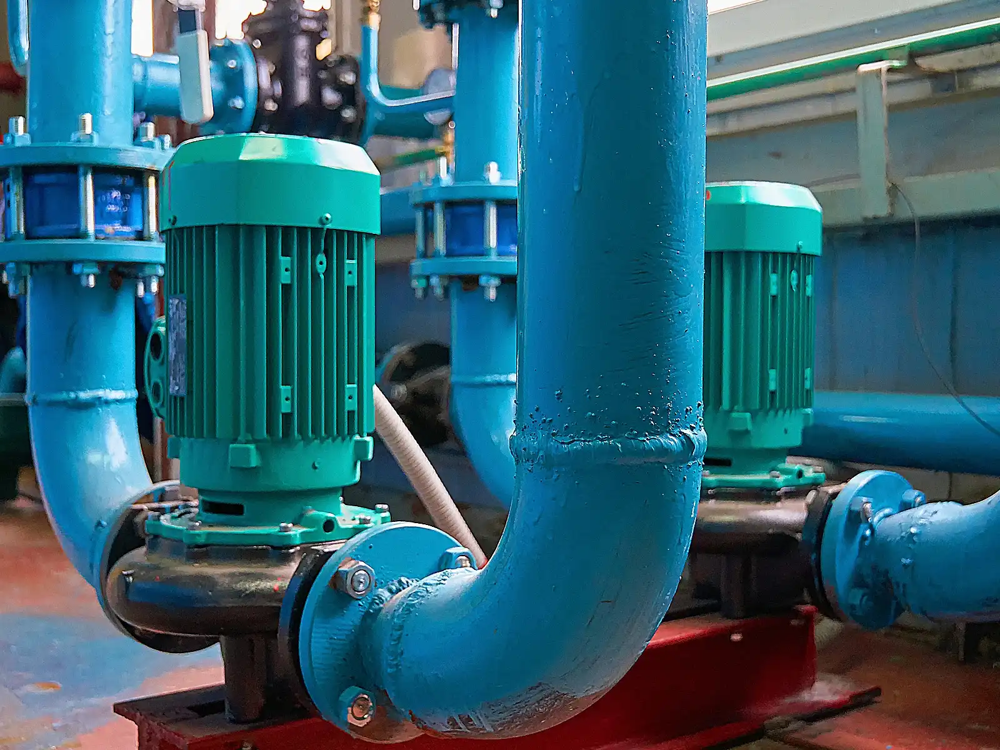

Explora cómo diferentes industrias han optimizado sus operaciones utilizando las soluciones IIoT de Chesterton Connect™. Estos estudios de caso destacan mejoras en rendimiento, reducción de tiempos de inactividad y ahorro de costos.
Casos Destacados:
Detección de Vacío en Bomba
Identificación de condiciones de funcionamiento en seco, ahorrando $35,000 anuales en reparaciones.

Fallas en Sellos Mecánicos
Detección de baja presión de lavado debido a un filtro obstruido, evitando fallas recurrentes.